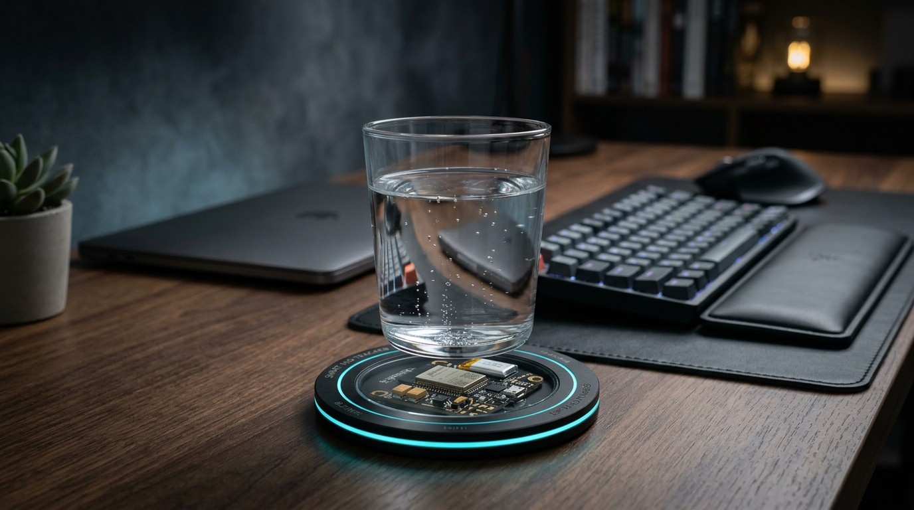
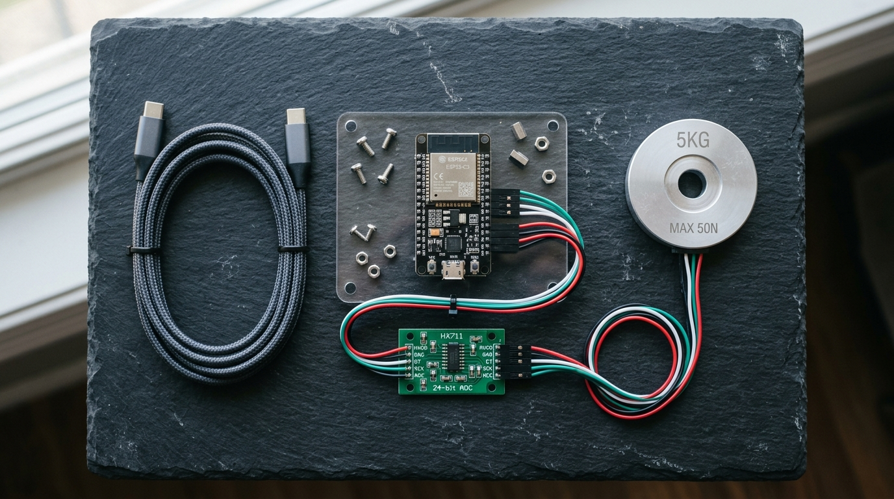

親手組裝 24-bit 高精度稱重感測器，編寫滑動濾波與水杯狀態機演算法，透過 Web Bluetooth API 打造專屬於你的免裝 App 桌面智慧水杯墊。

工作專注時經常一坐就是數小時滴水未進。市售智慧水杯動輒數千元且限定特定杯體；本專案採用開源架構，將任何杯子都升級為智慧監測裝置。
工作坊核心之一為編寫韌體狀態機（拿起水杯 → 飲用 → 放回計算差值）。在下方控制台可直接模擬硬體事件並觀察即時數據流。
現場發放全套模組化硬體材料包。免焊接設計，課堂中完成組裝與韌體燒錄，課後整套完整帶回日常使用。

32-bit RISC-V 單核心微控制器，原生支援低功耗藍牙 (BLE 5.0) 與 2.4GHz WiFi。
高靈敏雙通道類比數位轉換晶片，具備 128 倍可程式增益放大，可捕捉 1g 微小重量變化。
4 線全橋式金屬應變規傳感器，搭配霧面平穩托盤與防滑避震腳墊，穩固耐用。
含 1 米高品質數據傳輸線、防呆顏色對應杜邦跳線與專屬固定螺絲組。
包含 PlatformIO C++ 原始碼、狀態機演算法、兩步 NVS 校準與 Tailwind 前端儀表板。
提供全彩步驟圖解指引手冊，課後享有線上社群問答與韌體升級支援。
全天 09:30 至 17:00（含 1 小時午餐休息，純實作 6.5 小時）。從傳感器底層訊號處理到前端現代 Web BLE 通訊，每階段均有實作任務與講師助教驗收。
惠斯登電橋原理、HX711 24-bit ADC 訊號採集、ESP32-C3 腳位規劃與防呆連接。
滑動平均濾波去噪、Tare 一鍵歸零、已知重量校準與 ESP32 NVS 斷電記憶儲存。
有限狀態機 (FSM) 防抖邏輯、重量變化差值計算、空秤防呆與板載 LED 雙閃回饋。
免裝 App！瀏覽器 Web Bluetooth API 藍牙直連、自訂 GATT Profile 與水波圖表渲染。
串接 Discord / Home Assistant Webhook 久坐提醒，一對一除錯調校，作品驗收。
可以。本工作坊所有硬體模組均已預焊排針並附防呆插拔杜邦線，全程無需使用烙鐵。現場提供詳細講義並由講師步步指導。
請自備：
是的。費用 NT$ 2,500 為一票全包制，包含 ESP32-C3 開發板、HX711 模組、5KG 稱重傳感器托盤、線材、專屬講義與茶點。完成後的硬體作品可直接帶回家正常使用。
Android 系統使用 Chrome 瀏覽器可原生支援 Web Bluetooth；iOS 裝置可透過免費的 Bluefy 瀏覽器或切換為內建 WiFi AP / mDNS 配網模式（Safari 輸入 http://water.local）使用。